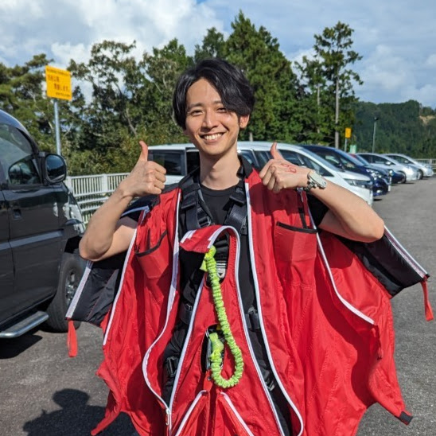

Robotics AI/ML Engineer & Manager
Nao Yamada
I lead a robotics AI engineering team. I design tasks for robots, build tools to collect demonstrations, and train and evaluate vision-language-action (VLA) models.
My graduate research used graph neural networks to recognize human activity for homecare robots. I later developed backend services for a SaaS product, computer vision models, and synthetic instruction-tuning data.
Education & Work History
- Present Robotics AI/ML Engineer & Manager
- Machine Learning Engineer
- Web Application Backend Engineer
- Master of Engineering in Mechanical System
- Bachelor of Engineering in Mechanical System
Selected Engineering Work
Robot learning and control
- I design robot tasks and train and evaluate VLA policies. One question I study is how to collect additional demonstrations for a subtask where a policy struggles.
- I implement robot control with VLA policies and build teleoperation systems for both physical robots and Isaac Sim. These systems let an operator demonstrate a task and record it for training.
OpenLUTRA · Robot data collection
- I contributed as a robotics domain expert, working with the development team in short iterations to define and refine feature requirements for data collection and quality checks.
- Operators can record ROS 2 topics, monitor data quality during a demonstration, and review the resulting MCAP recording. Browse OpenLUTRA on GitHub.
Synthetic data for language models
- I worked with domain experts and model providers to define requirements for multi-turn instruction-tuning data in a specific programming language and domain.
- I built a synthesis pipeline drawing on OSS-Instruct, SelfCodeAlign, and metacognitive prompting.
Symbol detection in technical drawings
- I trained and evaluated a YOLOX detector and reported the results. Domain-specific preprocessing and augmentation improved detection over the baseline on imbalanced classes.
Skin anomaly segmentation and inference API
- I defined annotation guidelines, trained and evaluated a segmentation model, and used the results to refine the labels. I implemented the inference API in FastAPI.
Batch processing
- I replaced a Spring Batch implementation with custom processing code. I traced the existing threading and transaction behavior before designing, implementing, and testing the replacement.
Large PDF exports
- I built a memory-efficient export for large sets of user PDFs. The server generated ZIP data incrementally, uploaded the parts to Amazon S3, and streamed the completed archive through a download API.
Backend integrations
- I designed, implemented, and tested APIs for external systems and provided a mock API for early integration testing.
Personal Projects
Technical Skills
Robotics
Java
Python
Database & Middleware
Development Tools
CI/CD
Cloud Service
Writing, Talks & Research
Personal writing and slides
Professional talks, posters, interviews, and articles
- Nikkei Business interview · Data quality in robot learning.
- Weights & Biases Tokyo Meetup #27 · Talk on data collection for robotics AI.
- NVIDIA GTC 2026 · Poster P81345: GPU-Accelerated Scalable Domain-Specific Data Curation Using VLM.
- NVIDIA AI Day Tokyo 2025 · Talk on curating image datasets with vision-language models and NVIDIA NeMo Curator.
Engineering blog articles
- 7th OpenArm Study Group · Talk on robot data collection and OpenLUTRA.
- Robotics Society of Japan 2026 exhibit report · An OpenLUTRA demonstration.
- Getting started with OpenLUTRA · A guide to recording and validating demonstrations.
Research
-
An efficient activity recognition for homecare robots from multi-modal communication dataset
This paper is a compilation of my master's thesis, which Yani graciously summarized and enhanced by adding comparisons with previous studies. The repository for the system used in the research is uploaded on my GitHub.
- A Study of Human State Pattern Acquisition Method for Partner Robots
- Interactive adaptation of Hand‑over Motion by a Robot Partner for Comfort of receiving
Contact
- LinkedIn : nao-yamada
- X (Twitter) : @hachi_mada